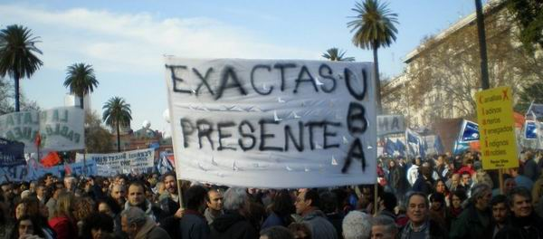

| home | | | comentarios de libros | | | notas periodísticas | | | educación vial | | | maestro ciruela | | | investigación | | | acerca | | | @ |
Por qué fuimos a la plaza Fuimos en defensa de la democracia y en reclamo de mayor distribución de la riqueza y participación popular. Lo hicimos desde nuestra propia identidad y sin ahorrar críticas al Poder Ejecutivo Nacional, pero en respaldo de la institucionalidad democrática y de las medidas progresivas que enfurecieron a una nueva derecha que usa la retórica del diálogo y el consenso y se envuelve en los símbolos nacionales mientras pretende imponer una política distinta a la que la mayoría del pueblo votó hace pocos meses. Somos miembros de organizaciones sindicales como la CTA, CTERA, la Unión Obrera Metalúrgica y ATE; de derechos humanos como el CELS, la Liga Argentina por los Derechos del Hombre, las Madres de Plaza de Mayo-Línea Fundadora, la Asamblea Permanente por los Derechos Humanos; de pequeños empresarios, como la Asamblea de PYMES y el Instituto Movilizador de Fondos Cooperativos; economistas del Plan Fénix; decanos y profesores universitarios, científicos e investigadores; sacerdotes en opción por los pobres; dirigentes políticos que demostramos la posibilidad de construir alternativas populares sin clientelas ni aparatos; intelectuales y artistas integrantes del agrupamiento *Carta Abierta* y ciudadanos sin militancia partidaria ni institucional. No formamos parte del gobierno. Objetamos la destrucción del INDEC y la construcción del tren bala, la negativa a reconocer la personería de la CTA y la alianza con sectores de la mal llamada burguesía nacional, que fue socia de los gobiernos neoliberales. Consideramos intolerable el mantenimiento de altos niveles de hambre y exclusión en uno de los grandes productores de alimentos del mundo. Pero la restauración conservadora en marcha, con el impulso del sector de la paleoizquierda que imagina protagonizar una revolución agraria, no cuestiona los defectos sino los aciertos del gobierno, al que intenta imponerle sus intereses |
económicos por encima del interés general, sin reparar en costos ni en métodos. Cuestiona la reconstrucción de la autoridad del Estado luego del colapso de 2002, el saneamiento de la Corte Suprema de Justicia, el juicio a los responsables del Estado terrorista, el drástico descenso de la desocupación, la actualización de los ingresos de jubilados y pensionados, el establecimiento de un haber para las personas mayores de 70 años que no tenían ninguno, el aumento del presupuesto educativo, la creación de un ministerio de ciencia y tecnología, la política exterior independiente, en asociación con los gobiernos democráticos de Sudamérica. No busca un avance sino un salto atrás. Contra toda evidencia se acusa de autoritario y soberbio al primer gobierno que ha prohibido el uso de armas de fuego en el control de manifestaciones y se moteja de represión violenta al desalojo con guantes de seda de la ruta del MERCOSUR, por la que desde hace tres meses no se permite el tránsito de mercaderías, obligando a tirar millones de litros de leche y toneladas de frutas y verduras. De ese clima deslegitimador, parecido al que minó la presidencia de Arturo Illia, participan en forma tan entusiasta como irreflexiva sectores de las clases medias urbanas influidos por la cobertura tendenciosa de diarios y canales de televisión temerosos de que se democratice la comunicación de masas. De esta crisis, no menos grave porque se la niegue, sólo se sale con más democracia y más distribución de la riqueza. Para ello se impone una reforma impositiva integral, que grave a todos los sectores que en estos años han tenido beneficios extraordinarios, como la especulación financiera, la minería y la pesca. Ésa es la voz propia con la que fuimos a la Plaza de Mayo, en defensa
del valioso trayecto recorrido desde mayo de 2003 y en demanda de su
profundización, con mayor calidad institucional y con la participación
popular que no puede dejarse en manos de quienes conmemoraron con sus
cacerolas el bombardeo sobre la ciudad abierta de Buenos Aires un trágico 16
de junio. |
|
|  | ||